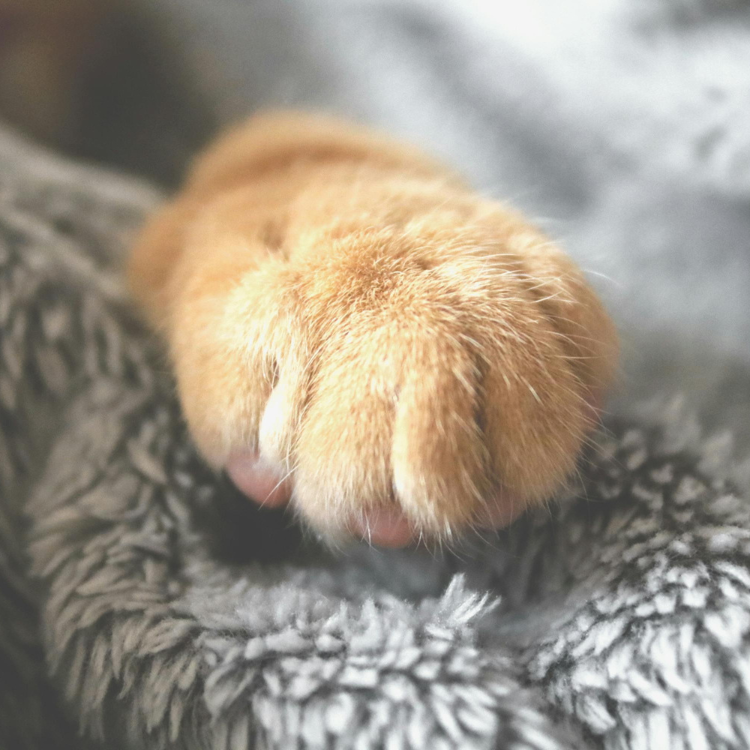

This question often sparks heated debates among behavioral experts, as it involves various urban legends about cat behavior. Let’s delve into why cats place such high importance on their paws and why they prefer not to have them touched by others!
For cats, their paws are crucial for hunting and self-defense. Therefore, they are instinctively protective of their paws and avoid allowing other beings to touch them.
Cats excel in short bursts of speed and jumping. If their paws are pressed or constrained, it can affect their ability to leap. Thus, cats prefer to keep the area above their paws clear to maintain their agility.
In addition to whiskers and scent, a cat’s paws are vital for exploring their surroundings. When faced with unfamiliar objects or feeling uneasy, cats instinctively use their paws to investigate and understand their environment.
This aspect relates to a cat’s sense of dignity. To cats, their paws are a part of their esteemed self. Therefore, they are reluctant to let others touch their paws, as it is seen as a matter of their self-respect.
Want to gain a deeper understanding of dog behavior and how to care for them? Click the link below to read more related articles. read more related articles